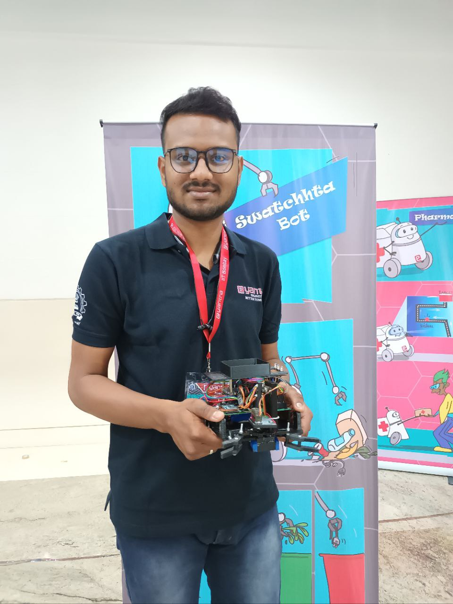
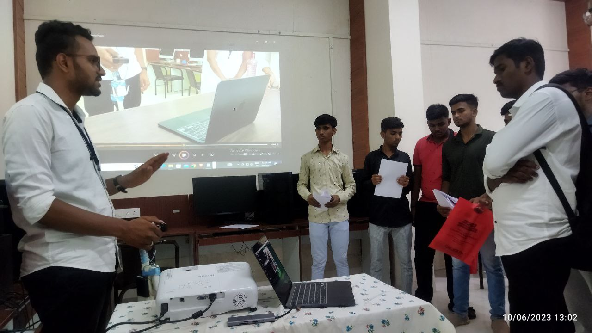
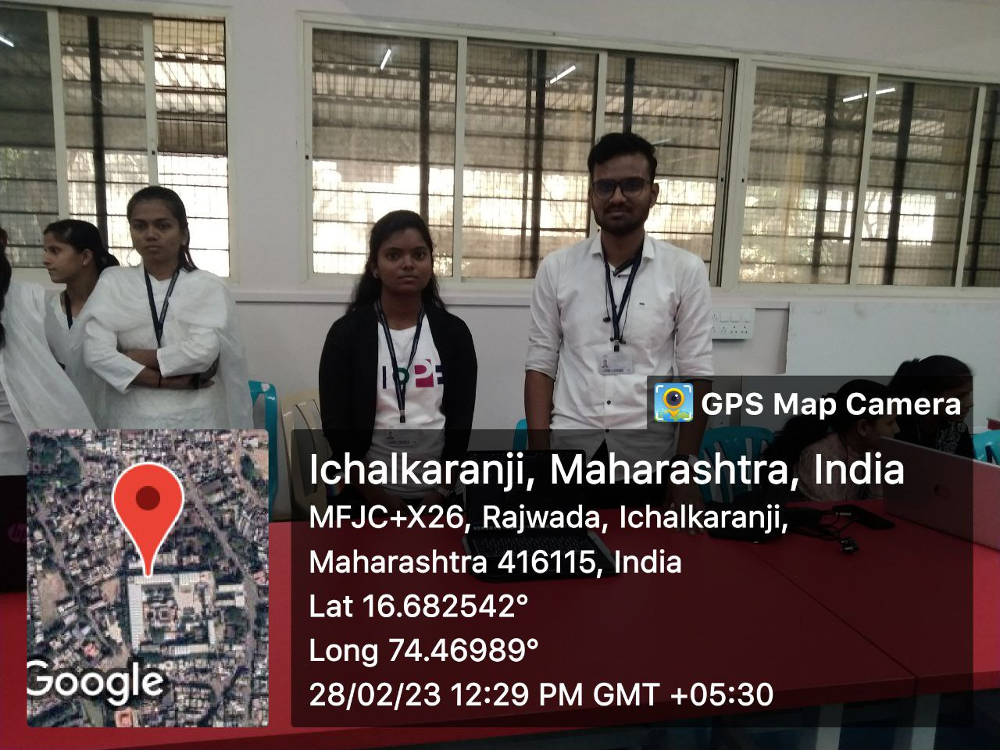
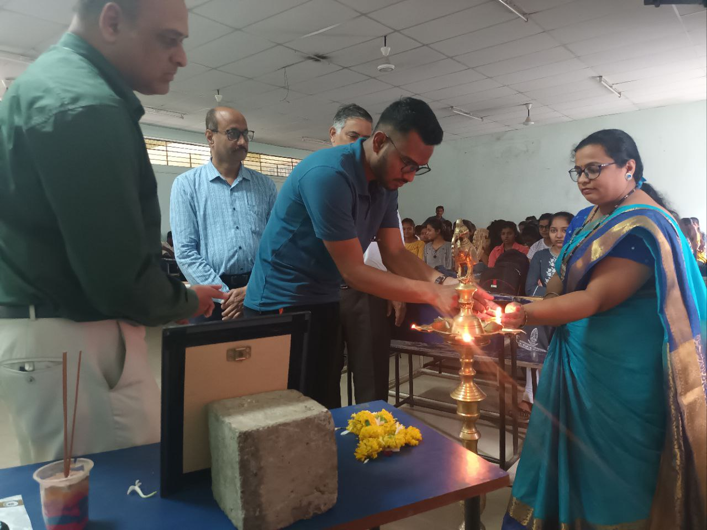
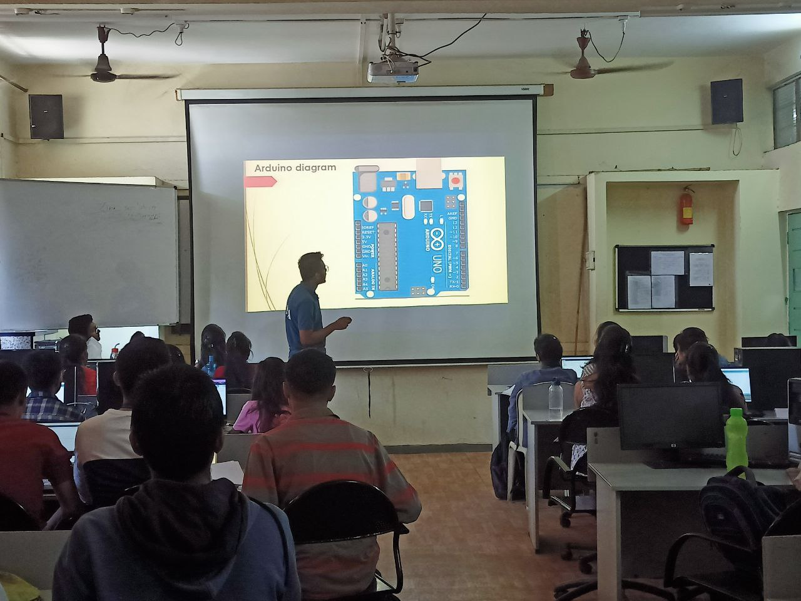
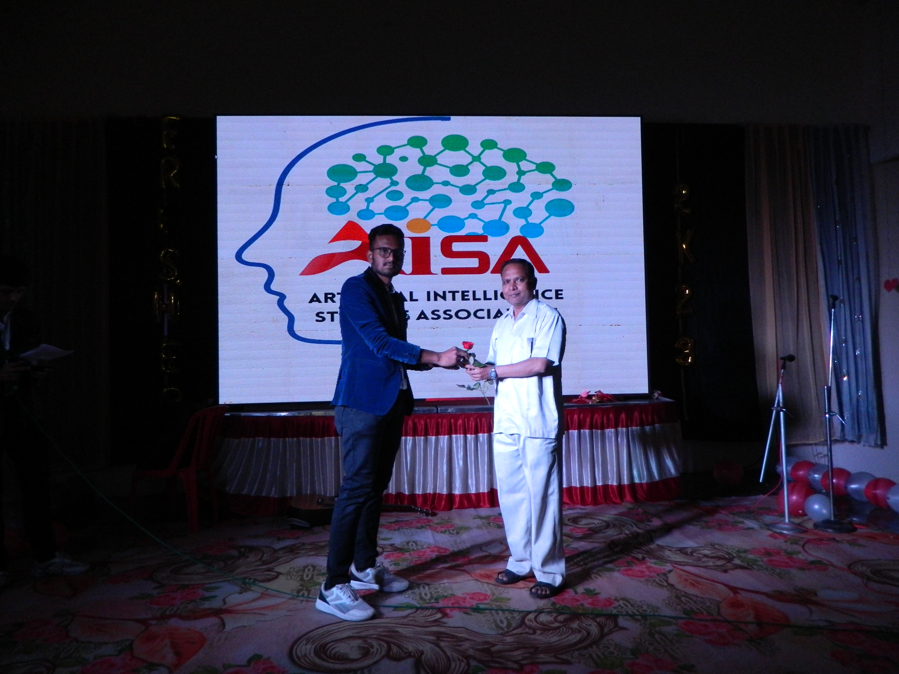

E-yantra robotics competition 2k23.
I participated in E-yantra robotics competition in 2k23, And my team secure third rank in this contest.
This competition is held by IIT Bombay each year.

Project Expo in DKTE 2k23.
Theri is a program called "मी राजवाडा बोलतोय" on 10 June 2k23 for upcomming first year students. For
them my CSE department arrange project exibition to showcase the talent of the deparment by their
projects. I represent my "Third Eye project at that time."

Institute level innovation and Prototype competition.
My college associated with idea lab arrange institute level innovation and prototype competition on 28
Feb 2k23 for encouraging toward snew startups for students.I took part in this competition.

Am I Engineer?
Artificial intelligenc estudent association(AISA) arranged their first program which is "am I Engineer"
as I
am president of a AISA, I inaugurate this program, I felicitate all the faculties and the students on
that
day and also deliver a speech on the topic 'what is actual engineer and how to be a good engineer'.

One day Arduino workshop.
I took one day workshop on Arduino, as Arduino is in syllabus of second year engineering and I have
knowledge about the Arduino hence I took this workshop under AISA. This workshop for second year student
about the Arduino design and the programming. I took nearly 10 experiments on Arduino, along with
hardware
and programming

Environmental Visit to Radhanagari Wildlife sanctuary.
Environmental visit is a part of curriculum in the subject of environment in second year. My batch was
decide to visit wildlife sanctuary as a visit spot, and I took the responsibility of full arrangement. We
enjoyed a lot and study different variety of plants and animals.

Freshers party 2k23.
There are different activities held by AISA, one of them was Freshers party 2K23, for the freshers of CSE-AI
and AIDS students, as I am a president of AISA, I took the whole responsibility of this Event.